Projects
Portfolio: You're looking at it.
December 2022 - Present
Resumes are boring no matter what you put on it. I decided a website was the best way to portray that with a bit of front-end skills and artistic freedom. Here's a little sneak peek into the design and thought process...
View CodeBlubot: Discord Music and Utility Application
May 2022 - Present
It's hard to organize a quick five-man team to play games with a group of friends when people are committing and uncommitting. If there's no bot out there that makes a sign up UI, why don't I make one? There's plenty of music bots out there, but I think I can make a better one. Self-updating UI on a thread, control panel as intuitive as Spotify, and a fully functioning queue with history. It runs on a containerized daemon in an AWS EC2 instance and has full documentation on the repository. Check it out!
Visit Blubot🤖 Blubot


This is a fully functioning Discord Bot with polling, event signups, full-blown music player + GUI, timers, and more miscellaneous applications and tools!
🧐 Features
Here's a rundown of a few core features...
🎮 The .game [@role mention] [max number of players] creates a GUI that keeps track of people signed up for a particular team. Select add or remove to add/remove yourself from the list. perhaps is a toggle button signaling interest, but not commitment.
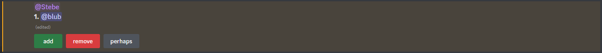
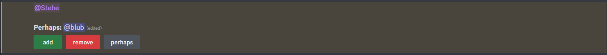
When a team is full, newcomers can no longer add themselves, so they will have to wait for somebody else currently on the roster to leave.
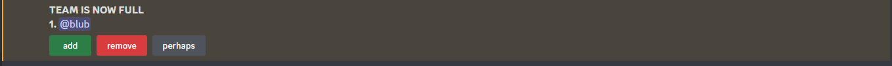
❓ The .poll "[question] [optional: choices] is a simple way to show a poll. Omitting any choices automatically creates a yes/no poll, while additional arguments separated by spaces will be considered choices. If an option has a space in it, you can encase it in quotations.
Users can only choose one choice. Clicking another choice will remove you from the current one, or you can click your current choice again to opt-out.
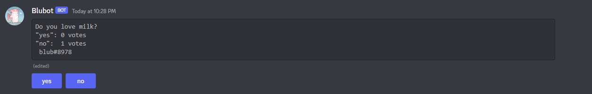
Here, I typed .poll "Favorite Pizza Brand?" Domino's "Pizza Hut" "Papa John's"
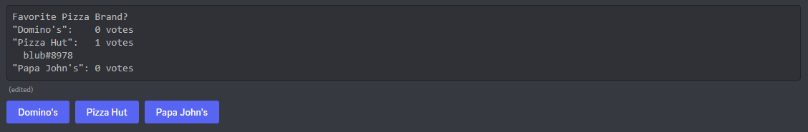
🪙 The .cf command simply creates a button that lets you flip a coin. Click it multiple times, and something will change...
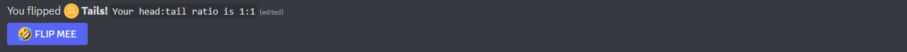
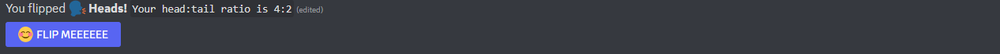
📢 Encased in the utility.py Cog, the .spam [@user] [number of times] command lets you become very annoying, perhaps for the sake of bringing to attention to somebody who frequently AFKs...
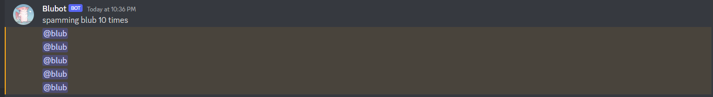
🎵 The Music Module 🎷
The most robust portion of the Bot, the music bot. Utilizing countless dependencies, you can simply get started by joining a voice channel, then using .p, .q, .pn, or discord's new slash command, /play.
Here, I use /play Minecraft Background Music 5 or .p Minecraft Background Music -5 to begin searching for the top 5 results. If the number of results is omitted, it will play the top song.
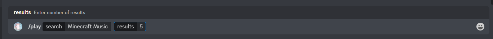
Click the button corresponding to the song you'd like to play
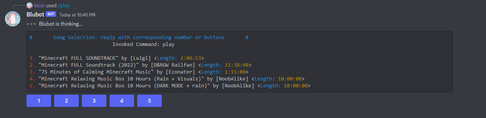
Now, use /control or .ctrl to pull up the controller/interface. It displays the current playing song, a live progress bar, timestamp, and the current queue. You may click the buttons: back, pause/play, forward, shuffle queue, update control panel (in case it updates too slow) or just use commands to do the same.
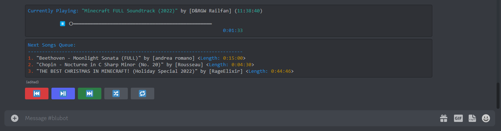
This is the list of registered slash commands.
/back: go back a song/clear: clears the queue/control: brings up control panel, disables old ones/help_music: lists commands for music player/leave: leaves the channel/pause: pauses the song/play: adds selected song to front of queue/playnow: skips current song and plays selected song/queue: adds selected song to back of queue/restart: replays current song/resume: resumes the song/skip: go forward a song
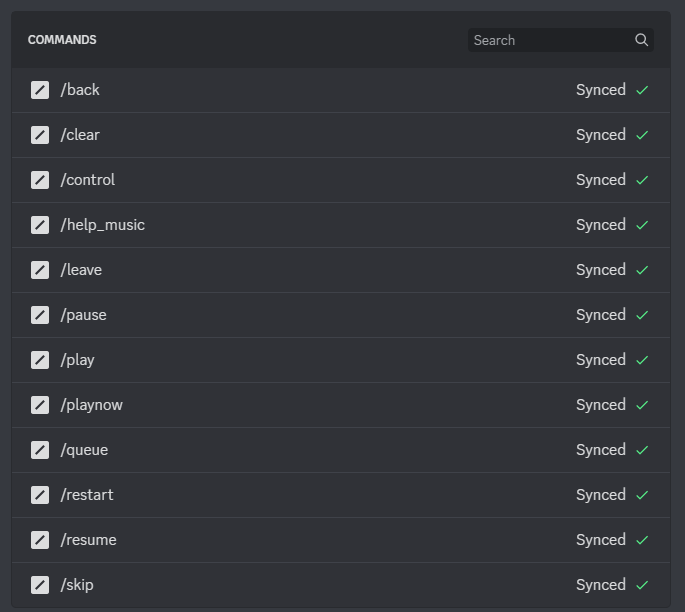
💪 Setting Up for Your Project
Make sure you've read Discord's tutorial on setting up your bot on discord before you try running code. This will assume your bot is registered and ready to go, or you've got a template.
📂 Creating a Workspace
This is somewhat optional, but creating a clean workspace without conflicting/unknown programs and dependencies minimizes possible errors
create a clean directory and download source files OR use
git clone [repository URL]simply create a new folder of your desired location or in a terminal, type
mkdir Blubotnavigate to the directory/folder
install python's virtual environment
pip install virtualenvorpy -m pip install virtualenv(use whichever alias is applicable for your python interpreter. PowerShell uses the aliaspy)
set up and activate the virtual environment
py -m venv envto create the virtual environment, wherevenvis the name of the module andenvis the name of the actual environment./env/Scripts/activateto enter the virtual environment. Linux-based virtual environments will have a different path
🖊️ Dependency Requirements
If you're not using virtual environments, make sure conflicting modules such as discord are uninstalled before you begin. Then, install these dependencies.
pip install [dependency] or py -m pip install [dependency]
py-cordrequestsyoutube-dlpython-dotenvPyNaCl
🔉 FFMPEG
FFmpeg is an application that enables audio playback and gives Blubot the ability to play music. Make sure the application ffmpeg is downloaded.
For Windows:
install ffmpeg
go to
https://www.gyan.dev/ffmpeg/builds/install
ffmpeg-git-essentials.7zfrom the git master branch buildextract the folder with 7z and put it in desired location; We will put the folder directly in C:\ drive (and will rename to simply
ffmpeg)
set environment variable (so ffmpeg can be accessed)
go to Windows Start 🪟 and type
environment variablesto openedit the system environment variablesgo to
environment variables...scroll down
system variableslist until you find the variablePathclick
Edit...thenNewtype the absolute path of the ffmpeg executable folder aka "bin". Since we put the downloaded folder in the C:\ drive, the path is
C:\ffmpeg\bin
verify that ffmpeg was installed correctly:
open Command Prompt or PowerShell
type
ffmpeg -versionor justffmpeg, and you should get some non-error response.
🏃♂️💨 Run the Project
👨💻 Configure Code
There are some minor changes you must make for the code to work, since this Bot is personalized.
In the
main.pyfile where the bot is being initialized, locatedebug_guilds. Here you have two choices:To make the bot global, simply delete the keyword argument and the list. This is usually slow and takes minutes for Blubot to register
To make it available on a few servers and for quick setup, add your own desired Server IDs in the list. Refer to this article to find your server id.
Set up your API Token, the password that lets you actually control your bot. Make sure to keep it off the internet or put it somewhere safe.
Find your API Token in the Developer Dashboard
Select your app > Go down to Bot > Copy or Reset your Token
In the Blubot directory, create a file called
.envwhich will serve as your secret fileType
BLUBOT_API_TOKEN = 'YOUR TOKEN HERE'and save it. You may change the name of the variable as long as the same variable name is changed inmain.py
Once you're in the Blubot repository, simply run the driver application:
py .\source\main.py
Have fun!
✉️ Contact
If you have questions, email me at steven2003mao@gmail.com
American Airlines
November 2022 - Present
A data science and statistics focused team project. Given an official and raw dataset of airport-related activity from American Airlines, the goal is to design and implement a machine learning model that will predict the amount of checked bags given any time, source, destination, airport, and more parameters. This is an ongoing project whose goal is incredibly simple yet the solution is more sophisticated than it seems.
Agtern
August 2022 - December 2022
Agtern was a team project led by a good friend. A software focused on getting University Students internships, its main functions were to scrape across many websites, categorize and identify their appropriate major-specific attributes, and display them on a nice GUI. The majority of my contribution was towards developing the GUI. We first began using Python's abhhorently ugly Tkinter module, which, similar to Java FX/SceneBuilder and other desktop GUI programs, was divided into "frames" or "panels", the equivalent of a stylized div. Soon, we realized the Windows Vista-like GUI wasn't going to fly, so we then transitioned to Angular. Despite copying the exact same UI structure, it looked many degrees better!